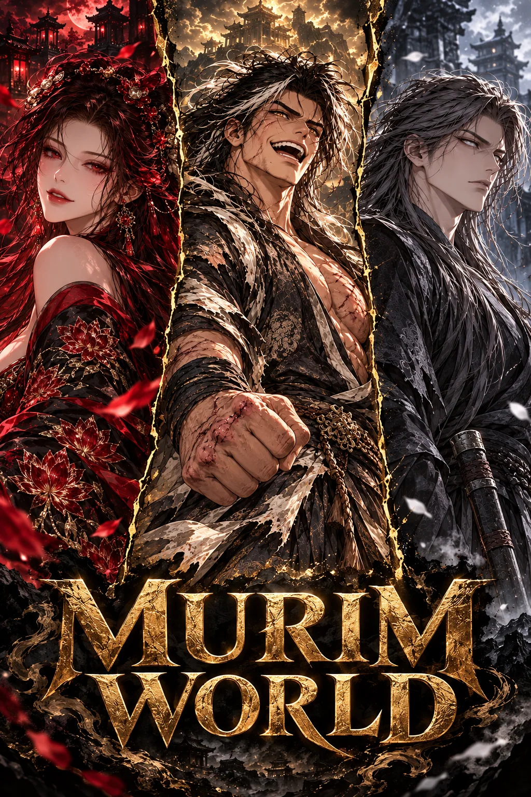
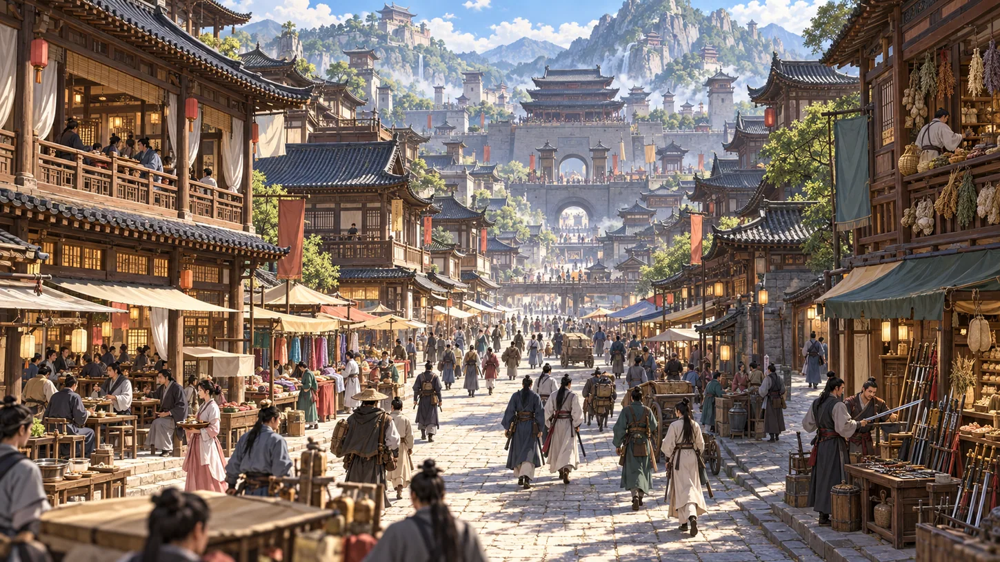

AN OPEN MARTIAL FANTASY
Every legend began somewhere.
A world of hidden masters, contested loyalties, and paths that have yet to be walked. Choose who you are. Murim will remember what you do.

01 / THE WORLD
Power writes history.
People change it.
Across the Central Plains, martial families, sects, merchants, and wanderers compete for influence. Some seek glory. Some seek peace. None control the entire world.

THE CENTRAL PLAINSNo path is assigned to you.
Study a sword art. Refine a medicine. Bargain for a secret. Join a sect, challenge a rival, or leave the politics behind. Your abilities and choices shape what follows.
The Murim Alliance gathers orthodox powers around a council table. The Heavenly Demon Cult follows its own order. Beyond both stand the independent Star Family and three masters called gods.
Meet the people of Murim ↗LEGENDS / DIVINE REALM
The Three Gods of Murim
Three independent masters. Three very different kinds of danger. Their titles are legend; their choices are their own.
And beyond even the highest recognized realm stands Aniki Star, patriarch of a house no council can command.
02 / THE PATH OF STRENGTH
Ten realms. No easy ascent.
Every realm has early, middle, and late stages. Preparation and technique matter, but the distance between realms is real.
03 / THE POWERS
Every banner has a price.
Choose an allegiance, earn one, or remain beyond their reach. Select a faction to meet its people.
The Murim Alliance, also called the Orthodox Alliance, is a council of major orthodox families and sects. It does not speak for every member, and the Star Family remains independent.
04 / THE PEOPLE
An atlas of ambition.
Meet the people who move Murim. Their alliances, rivalries, and secrets unfold through the choices made in play.
No characters match that search. Try another name or faction.
05 / THE PLACES
A world beyond the page.
From mistbound estates to crowded arenas, every place holds a different kind of story.
ARTBOOK / MOMENTS
A closer look.
Expressions, encounters, and alternate glimpses from the Murim World collection.
YOUR STORY / YOUR RULES
Who will you become?
Give your character a name, a realm, a history, or just a single goal. Leave the rest to be discovered as you travel.
THE SOUND OF MURIM
Beneath the Murim Sky
The original instrumental theme for wandering roads, gathering storms, and the first step of a new story.